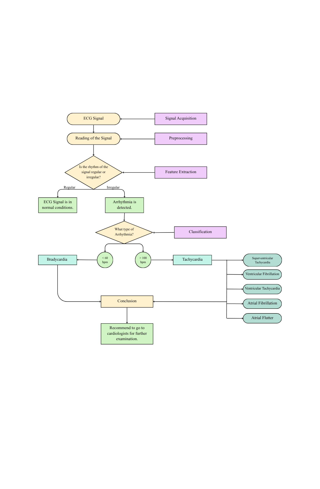

Researchers: Shena Marie Espelita, Jashley Mae Alcances, Ylona Leigh Balahadia, Mhekyla D. Ramirez
Adviser: Dr. Abid Yaya | Date: September 2025
BeatSense is a software-based system designed to automatically detect and classify arrhythmias using ECG signal processing and machine learning. Cardiovascular diseases remain a global health concern, and early detection of abnormal heart rhythms is crucial in preventing complications such as heart failure or stroke. The system filters ECG signals, extracts features, and classifies them into normal or arrhythmic categories using Python-based algorithms.
Manual ECG interpretation is accurate but time-consuming and prone to human error. There is a growing need for an automated, low-cost, and efficient method for arrhythmia detection that improves diagnostic accessibility and accuracy. BeatSense addresses this gap through an AI-driven, Python-based ECG analysis system.
Several studies have explored AI and signal processing for ECG analysis. Kim et al. (2025) proposed a hybrid CNN-Transformer achieving 99.58% accuracy on the MIT-BIH dataset. Ayyub (2025) reviewed over 200 AI-based studies emphasizing dataset quality and model interpretability. Souza and Dantas (2024) demonstrated CNN-LSTM efficiency for ECG feature extraction, while Shah and Sarda (2025) built a Python-based system for real-time ECG visualization. These works inspire the design of BeatSense as a practical and scalable arrhythmia detection tool.
The BeatSense system follows a structured workflow for ECG analysis, consisting of data acquisition, preprocessing, feature extraction, classification, and program implementation.
The figure below illustrates the working flow of BeatSense from ECG signal input to arrhythmia classification.
BeatSense performance is evaluated using frequency, accuracy, and statistical measures to determine the system’s reliability.
The study uses the publicly available MIT-BIH Arrhythmia Database, ensuring no human participants or personal data are involved. All sources and datasets are properly cited and used solely for academic purposes.
BeatSense is limited to ECG recordings from the MIT-BIH Arrhythmia Database and does not include live patient data. The system currently detects Bradycardia and Tachycardia types of arrhythmia and has not been clinically validated. Noise and signal distortions may slightly affect detection accuracy.